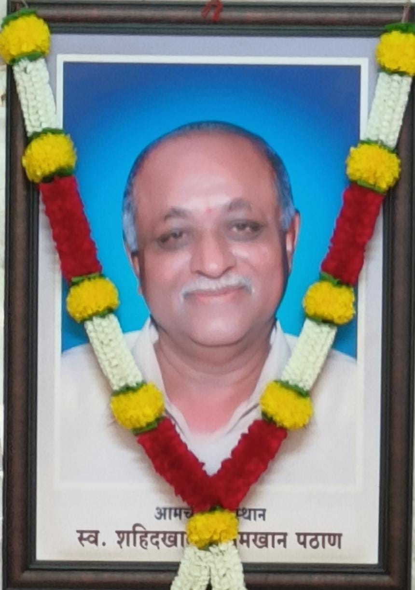
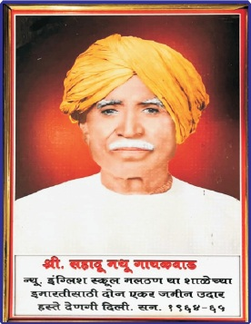

संस्थापक

स्थापना ७ जून १९६३ रोजी, आपल्या विद्यालयाचे संस्थापक, श्रीमान. शहिदखान पठाण यांच्या प्रयत्नाने ग्रामीण लोकांच्या शिक्षणामध्ये रममाण झालेल्या होण्यासाठी ग्रामस्थांच्या मदतीने गावात न्यू इंग्लिश स्कूल विद्यालय दि. ७ जून १९६३ रोजी सुरु करण्यात आले. संस्थापकांनी ग्रामीण भागातील विद्यार्थ्यांना चांगले शिक्षण मिळावे या उद्देशाने या शाळेची स्थापना केली. त्यांच्या दूरदृष्टीमुळे आज शाळा प्रगतीच्या मार्गावर आहे.
सहकारी संस्थापक

कै. गायकवाड सहादू नथू यांनी रयत शिक्षण संस्थेस ७७ आर. चौ.मी. जागा बक्षीसे पत्राने देऊन विद्यार्थ्यांच्या शिक्षणाच सोय केली. स्थापना ७ जून १९६३ रोजी झाली.
दि. ७ जून १९६३ रोजी विद्यालयाची सुरुवात झाली. त्यावेळी स्कूल कमिटी ऐवजी गावातील काही प्रतिष्ठीत व्यक्तींच्या मार्गदर्शन व योगदानावर शाळा सुरू झाली. सुरूवातीला ही शाळा मंदिरामध्ये भरत होती. या पंचक्रोशीतील विद्यार्थी शिक्षणासाठी या मंदिरात येत असत. विद्यार्थी संख्या वाढत गेल्याने जागेचा प्रश्न निर्माण झाला होता. संस्थापकांनी ग्रामीण भागातील विद्यार्थ्यांना चांगले शिक्षण मिळावे या उद्देशाने या शाळेची स्थापना केली. त्यांच्या दूरदृष्टीमुळे आज शाळा प्रगतीच्या मार्गावर आहे.शाळेचा संक्षिप्त इतिहास
महाराष्ट्र... महाराष्ट्र हा दगडधोंड्याचा, कडेकपाऱ्यांचा देश... भले रत्नाच्या खाणी तया मातीत नसतील पण पृथ्वीमोलाची लाख नवरत्ने याच मातीत जन्माला आली. त्यातील एक म्हणजे रयत शिक्षण संस्थेचे संस्थापक पद्मभूषण डॉ. कर्मवीर भाऊराव पाटील, आधुनिक युगातील भगिरथ की ज्यांनी शिक्षणाची ज्ञानगंगा झोपडी-झोपडीपर्यंत पोहोचवली. ह्याच शिक्षणरुपी वटवृक्षाची एक लहानशी फांदी आपल्या सारख्या दुर्गम भागात येऊन आपल्या-पर्यंत ही ज्ञानंगा पोहोचविणारे, आपल्या विद्यालयाचे संस्थापक, श्रीमान. शहिदखान पठाण यांच्या प्रयत्नाने ग्रामीण लोकांच्या शिक्षणामध्ये रममाण झालेल्या होण्यासाठी ग्रामस्थांच्या मदतीने गावात विद्यालय सुरु करण्यात आली.
स्थापना ७ जून १९६३ दि. ७ जून १९६३ रोजी विद्यालयाची सुरुवात झाली. त्यावेळी स्कूल कमिटी ऐवजी गावातील काही प्रतिष्ठीत व्यक्तींच्या मार्गदर्शन व योगदानावर शाळा सुरू झाली. सुरूवातीला ही शाळा मंदिरामध्ये भरत होती. या पंचक्रोशीतील विद्यार्थी शिक्षणासाठी या मंदिरात येत असत. विद्यार्थी संख्या वाढत गेल्याने जागेचा प्रश्न निर्माण झाला. कै. गायकवाड सहादू नथू यांनी रयत शिक्षण संस्थेस ७७ आर. चौ.मी. जागा बक्षीसे पत्राने देऊन विद्यार्थ्यांच्या शिक्षणाच सोय केली. गावातील अनेक देणगीदार पुढे येऊन त्यांनी शाळेस इमारत बांधण्यास आर्थिक सहकार्य केले.
श्रमदानातून व लोकसहभागातून दगडी इमारत बांधण्यात आली. पुढे पाच वर्ग खोल्यांच्या दुरूस्तीसाठी पंचशील ग्रुप पुणे यांनी सहकार्य केले आणि पाच वर्ग खोल्यांची दुरूस्ती करून शाळेस सहकार्य केले. पंचक्रोशातील अनेक शिक्षण प्रेमी नागरिकांनी तन-मन-धनाने शाळेस मदत केली. म्हणूनच ही शाळा आज प्रगतीपथावर असलेली पहावयास मिळते. आजच्या स्पर्धेच्या युगात आपल्या विद्यार्थ्यांना भौतिक सुविधा कुठेही कमी पडू नये,
हा उदात्त हेतू बाळगून उत्कृष्टाकडे वाटचाल हे ध्येय डोळ्यासमोर ठेवून कर्मवीर विद्याप्रबोधिनी अंतर्गत रयत गुरुकुल प्रकल्प हा अनिवासी गुरुकुल प्रकल सप्टेंबर २०१४ पासून सुरु करण्यात आलेला आहे. तसेच जुलै २०२५ पासून अप्रगत विद्यार्थ्यांचे वर्ग सुरु करण्यात आले आहेत. सर्व वर्गामध्ये इंटरअक्टिव पॅनल बोर्ड बसविण्यात आले आहेत.
स्कूल कमेटी ठराव घेऊन २१,२३,५४०/- रू. मध्ये ग्रामस्थ, ग्रामपंचायतमध्ये लोकवर्गणीतून रोटरी क्लबला २० टक्के रक्कम दिल्यानंतरच श्री. देसाई बद्रर्स व वनराई यांच्या माध्यामातून स्वच्छतागृहाचे काम दि. २७/०१/२०२६ रोजी पूर्ण झाले आहे. आत्ता सध्या भुमी एन.जी.ओ. या कंपनीने ही अंदाजे खर्च ११ लाखांचे टॉयलेट दिले व त्यांचीही २० टक्के रक्कम ग्रामपंचायतच्या मदतीने लोकसहभागतून पुर्ण करून काम सुरू करण्यात आले आहे. बांधकामासाठी लागणाऱ्या विविध परवानग्या मिळवण्यासाठीचे प्रस्ताव सबंधित विभागाकडे पाठिवण्यात आले आहे.
ते मिळताच बांधकाम पुर्णत्वात नेण्यात येणार आहे. यासाठी गावातील स्थानिक रहिवासी परिसरातील दानशूर व्यक्तीच्या माध्यामातून हा निधी उभा करण्यात आला आहे. त्यासाठी सबधितांना वेळोवेळी विविध माध्यमातून आव्हान करण्यात आले आहे. विद्यालयात शिक्षण घेणारे सुमारे ७०० विद्यार्थ्यांना शिक्षण देणारे आपले विद्यालय हे परिसरातील एकमेव मराठी माध्यमाचे विद्यालय आहे.
येथे शिक्षण घेणाऱ्या विद्यार्थ्यांना नविन शैक्षणिक धोरणानुसार (एन.इ.पी.) आधुनिक आशा भौतिक व शैक्षणिक सुविधा मिळाव्यात. ही विद्यालयाची संबधित सर्वाचीच इच्छा आहे. आपले विद्यालय हे फक्त पुस्तकी शिक्षण देणारी शाळा न राहता सर्वागिण विकास झालेल्या विद्यार्थी घडविणारे केंद्र बनवावे यासाठी विद्यालयाशी संबधित सर्व घटक समाजातील शिक्षणप्रेमी व्यक्ती व माजी विद्यार्थी यांच्या एकत्रित प्रयत्नांतुन आपली ही शाळा भविष्यात एक आदर्श शाळा म्हणून नावरूपात येईल. असा आम्हांला विश्वास वाटतो.
शाळेचे फोटो